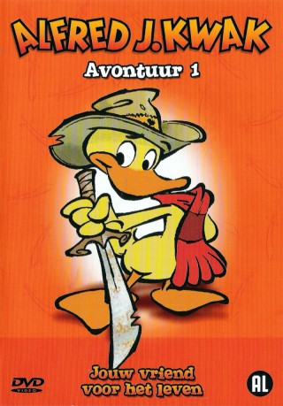

 
 IMDB-Wertung: 7.9 / 10
IMDB-Wertung: 7.9 / 10  Metascore: 0
Metascore: 0 
Die Waisenente Alfred Jodocus Kwak wurde, nachdem sie ihre Eltern verlor, von einem Maulwurf namens Henk aufgezogen. Gemeinsam bestehen Henk und Alfred tägliche Abenteuer und helfen ihren Freunden auf der halben Welt aus der Not.
Jahr: 1989
Dauer: 64 Minuten
FSK:
Land: Niederlande Studio: ZDFTonspuren:
Untertitel:
Auflösung: SD (720x540) Größe: 3512 MB
Genre: Animation/Trick, Familie, TV-Serie
Regisseur: Hiroshi Saitô, Vivian Pieters, Masayuki Kojima, Itaru Saitô, Dennis Livson
Drehbuch: Akira Miyazaki, Herman van Veen
Soundtrack:
Darsteller:
- Bram van der Vlugt als Burgemeester K. Rokodil, 13 episodes, 1989-1991
- Michiel Kerbosch als Gouverneur Alem Palem, 4 episodes, 1990
- Serge-Henri Valcke als Adviseur van de Sultan, 3 episodes, 1989-1990
 Megumi Hayashibara als Alfred J. Kwak, 1 episode, 1989
Megumi Hayashibara als Alfred J. Kwak, 1 episode, 1989- Hans Veerman als Circusdirecteur, 1 episode, 1990
- Ryan van den Akker als Alfred J. Kwak, 52 episodes, 1989-1991
- Frits Lambrechts als Henk de Mol, 42 episodes, 1989-1991
- Herman van Veen als Professor Paljas von Pinguïn, 24 episodes, 1989-1991
- Doris Baaten als Ollie de Ooievaar, 23 episodes, 1989-1990
- Johnny Kraaykamp Jr. als Dolf, 23 episodes, 1989-1991
- Ena Heese als Winnie Wana, 23 episodes, 1990-1991
- Fred Butter als Wannes, 21 episodes, 1990-1991
- Guido Jonckers als Aartsbisschop, 18 episodes, 1990-1991
- Niek Barendsen als Snel, 18 episodes, 1990
- Hans Otjes als Matroos, 17 episodes, 1989-1991
- Bill van Dijk als Lispel de Kwal, 15 episodes, 1990-1991
- Niek Pancras als Kapitein Stoppel, 14 episodes, 1990
- Marc Nahuys als Jonkheer Poen van Kale Koen, 13 episodes, 1989-1990
- Paul van Vliet als Koning Frans Ferdinand II, 13 episodes, 1989-1990
- Anton Kothuis als Inspecteur Holmes, 10 episodes, 1990
- Koos van der Knaap als Een van de 12 wijzen, 10 episodes, 1990
- Kees Schilperoort als Professor Hannibal, 9 episodes, 1989-1991
- Jip Wijngaarden als Hannes, 9 episodes, 1990
- Henk Temming als Igor de mus, 8 episodes, 1990
- Angelique de Boer als Neeltje, vrouw van de burgemeester, 7 episodes, 1990
- Bob van Tol als Kolonel Rangpang, 7 episodes, 1990
- Jan Anne Drenth als Meester Bas de Buldog, 6 episodes, 1990
- Felix Meurders als Verslaggever, 6 episodes, 1990-1991
- Alida Neslo als Koningin Cleo Kat Kammon, 6 episodes, 1990-1991
- Arthur Boni als Koning van Het Land van Twee, 6 episodes, 1990
- Bongi Mbatha als Tom Wana, 5 episodes, 1990
- Laura Vlasblom als Pikkie de Ekster, 4 episodes, 1989-1990
- Marlous Fluitsma als Anna van de Polder, 3 episodes, 1989-1990
- Donate den Hertog als Lisa Stoppel, 3 episodes, 1990
- Thandi Montshiwa als Blanche Wana, 3 episodes, 1990
- Joseph Mosikili als Kwa Wana, 3 episodes, 1990
- Henk Westbroek als Bruine alien, 3 episodes, 1990
- Christine Ewert als Witte koningin, 2 episodes, 1990
- Sjerida Felter als Carmen Duckson, 2 episodes, 1990
- Roelant Radier als Prins Sjalaman, 2 episodes, 1990
- Judith Linssen als Muis in het kasteel, 1 episode, 1989
- Babette van Veen als Muis in het kasteel, 1 episode, 1989
- Leo Dijkgraaf als Koning Alexander, 1 episode, 1990
- Jason Johnson als Michael Duckson, 1 episode, 1990
- Peter Lusse als Horst de mensentemmer, 1 episode, 1990
- Cor Witschge als Colombo de clown, 1 episode, 1990
Datei: X:\Kinder Filme AVI\# A-M\Alfred J. Kwak E4,5,6 (1989, FSK, 720x540).mkv seit 21.02.2019
Festplatte: Kinder-Filme+Trick
 Es gibt insgesamt 7 Filme in der Gruppe 'Kinder Filme AVI\# A-M'
Es gibt insgesamt 7 Filme in der Gruppe 'Kinder Filme AVI\# A-M'
")